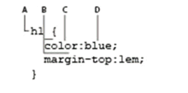
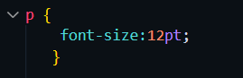
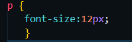

En esta lección vamos a conocer los elementos básicos de dos lenguajes: HTML y CSS. Aunque tienen distinta sintaxis y reglas, dependen fuertemente uno del otro. Al finalizar esta lección podrás saber cómo crear paginas sencillas HTML, añadir imágenes, crear enlaces de una página a otra y modificar su aspecto en pantalla utilizando CSS.
Este tema es enormemente extenso y muchos de los principios básicos que se explican aquí te enseñarán a crear sitios web de calidad con los medios disponibles en este momento, al tiempo que te preparan para el futuro, al avanzar las nuevas funcionalidades de HTML5.
Los documentos HTML (iniciales de Hypertext Markup Language) utilizan la extensión .htm o .html. Esta extensión avisa al navegador web o a un dispositivo como un teléfono móvil, que en este archivo hay contenido HTML y dicho contenido se restituye en la ventana del navegador o la pantalla del dispositivo siguiendo las reglas del lenguaje HTML.
Las etiquetas se utilizan para definir el contenido de una página HTML. Estas etiquetas quedan enmarcadas dentro de los símbolos "menor que" (<) y "mayor que" (>) y se ponen al principio y al final de un objeto o texto utilizado en la página HTML. Aquí vemos un ejemplo de dos etiquetas de título con textos en ellas. Las etiquetas no se muestran en pantalla, pero todos los navegadores saben que el texto entre las etiquetas es un título de primer nivel:
<h1>Welcome to Worldwide Apparel's intranet</h1>
En este ejemplo, el <h1> es la etiqueta de apertura, y </h1> la etiqueta de cierre. A toda esta línea de código la denominamos "elemento". Más concretamente, nos referiríamos a ella como un "elemento de título de nivel 1" o también "elemento heading 1" si preferimos utilizar el nombre en inglés original.
HTML y XHTML están estrechamente relacionados. Existe una lista de reglas definidas por el World Wide Web Consortium (organismo de normalización que también se conoce como W3C) que especifican los límites de HTML y XHTML.
Hay una diferencia esencial entre HTML 4.0 y XHTML 1.0 – los dos estándares más recientes publicados por el W3C (World Wide Web Consortium). Tal y como está definido el XHTML, las páginas escritas en XHTML se pueden ver también en los navegadores que muestran las páginas HTML actuales. Las etiquetas y atributos de XHTML y HTML siguen siendo las mismas, pero la sintaxis del código XHTML es más estricta.
Las diferencias más importantes entre XHTML y HTML son estas:
Todas las etiquetas XHTML deben tener cierre, aun en el caso de etiquetas especiales que técnicamente no necesitan etiquetas de apertura y cierre. Por ejemplo, la etiqueta <br>, que inserta un salto de línea, utiliza una sintaxis especial de autocierre. Una etiqueta que se cierra ella misma tiene este aspecto (con un espacio y la barra inclinada antes del signo ">": <br />
Al inicio de toda página web debe aparecer una declaración Doctype. La declaración de "tipo de documento" le aporta pistas al navegador sobre el tipo de información que se va a encontrar en la página. Puesto que las especificaciones de HTML y XHTML son distintas, el navegador sabe así qué lenguaje va a interpretar y representar. El navegador restituye la página empezando por la primera línea y va avanzando de principio a fin, por lo que esta indicación en la primera línea de todas tiene pleno sentido. Aunque no es obligatoria, es una buena práctica empezar siempre utilizando doctype al principio de nuestras páginas. La declaración doctype en HTML 4.
W3C es la abreviatura con la que se conoce al World Wide Web Consortium una organización sin ánimo de lucro cuyo objetivo consiste en orientar la evolución de la Web. El W3C ofrece directrices y reglas para especificaciones como HTML y XHTML. Una forma de definir la validez del código HTML o XHTML que generamos es utilizar el servicio online de validación del W3C, que es gratuito.
Para este ejercicio es necesario tener acceso a Internet. Si no dispones de acceso a Internet puedes seguir leyendo este apartado y conocer la teoría del proceso de validación.
Uno de los conceptos más importantes que debemos dominar a la hora de diseñar contenidos web es la estructura anidada de los documentos HTML. Los elementos suelen presentarse contenidos unos dentro de otros. Por lo general tenemos que empezar por diseñar la estructura HTML de la página para después continuar con los estilos, aplicando CSS.
En este ejemplo podemos ver los elementos más básicos que nos vamos a encontrar en prácticamente toda página web:
<html>
<body>
</body>
</html>
El elemento <body> está anidado (incluido) dentro del elemento <html>. En términos de programación, <body> está colocado entre la etiqueta de apertura <html> y la de cierre </html>, y por eso decimos que las etiquetas anidadas son las que se encuentran entre otras etiquetas de apertura y cierre. Ambos elementos, <body> y <html>, forman la estructura básica de toda página web. Cuando un navegador abre un documento HTML busca esta estructura.
El contenido dentro de la etiqueta body es la parte visible de la página, ya que es lo que se muestra en la ventana del navegador.
Para colocar imágenes dentro de un documento HTML se utiliza la etiqueta <img>. Al igual que ocurre con la etiqueta <a>, la etiqueta de imagen por sí sola no hace nada. Depende del valor de los atributos que especifiquemos, que indican qué imagen se debe mostrar y cómo ha de hacerse. Aquí vamos a insertar una imagen en nuestro documento HTML.
Muchos de los atributos opcionales se encuadran dentro de lo que se denomina "buenas prácticas". Las buenas prácticas son un concepto amplio, que se utiliza para describir la manera generalmente aceptada de hacer las cosas en el diseño y programación para la Web. Hay, en general, razones de sentido común detrás de las buenas prácticas: por ejemplo, al indicar la altura y la anchura se crea un espacio (conocido como "placeholder") para la imagen, y permanece aún en el caso de que la imagen no se haya descargado, debido a la lentitud de la conexión. Si no se crea este placeholder con una anchura y altura prefijadas, el aspecto y distribución de los elementos en pantalla va cambiando a medida que se cargan las imágenes, lo que en ciertos casos impide al usuario poder leer los contenidos durante ese proceso.
CSS (Cascading Style Sheets) utiliza un lenguaje distinto de HTML. CSS nos permite aplicar estilos de manera coherente a los distintos elementos de las páginas del sitio web, de modo que los títulos, listas y párrafos pueden verse igual en todas y cada una de las páginas.
Antes de que empecemos a trabajar con CSS es preciso aclarar cómo vamos a denominar a las distintas partes de la sintaxis de CSS en este libro. No es cosa fácil dicho así, porque ocurre que hay diferencias entre la especificación oficial del lenguaje CSS y la forma en que los diseñadores se refieren a CSS en el mundo real. En cualquier caso, los conceptos básicos son estos: el siguiente código es lo que conocemos como una regla de CSS:
De vez en cuando iremos mencionando los distintos componentes en el libro, así que si te pedimos que cambies el valor "blue" por "red", debes tener claro lo que hay que hacer. O, si te pedimos que busques y cambies el selector h1 por un selector h2, que ello tenga sentido para ti.
Para hacernos una idea de cómo funciona CSS vamos a crear una regla CSS sencilla que cambia el estilo de un título en la página. En el archivo 02_index_work.html ya tenemos el texto "Welcome to Worldwide Apparel's intranet" dentro de una etiqueta <h1>. Puede que una de las mejores maneras de entender la acción de CSS sea ver cómo se aplica el estilo por defecto para este título al escribirlo en pantalla.
Los selectores de etiqueta se utilizan con mucha frecuencia, pero solo se pueden aplicar a elementos HTML. Cuando lo que queremos es modificar el estilo de alguna cosa que no coincide exactamente con una etiqueta, por ejemplo cambiar el color de una única palabra dentro de un párrafo, el selector de etiqueta no es una buena opción (e incluso en algunas ocasiones resulta imposible de aplicar). En este caso podemos utilizar el selector de clase, que es una regla CSS que se puede aplicar a cualquier elemento dentro de una página. Los selectores de clase tienen unas opciones de nomenclatura flexibles, pero es muy conveniente utilizar nombres que describan adecuadamente lo que hacen. Por ejemplo, podemos crear selectores de clase como .caption, .imageborder, o .redtext. En este ejercicio vamos a crear un estilo de clase que aplica color rojo a las palabras Worldwide Apparel en un párrafo.
En la práctica anterior los estilos estaban situados dentro de la sección de cabecera (<head>) de la página. Esta modalidad recibe el nombre de hoja de estilos interna. Además de hojas de estilo internas, también existen las hojas de estilos externas y los estilos aplicados directamente ("inline").
Una hoja de estilo externa es un documento independiente con la extensión .css. Cuando utilizamos un archivo externo, los estilos se definen en él y en las páginas HTML tenemos que insertar un enlace a dicho archivo. Mientras que las hojas de estilo internas solo se aplican a la página donde residen, las hojas externas se pueden aplicar a múltiples documentos HTML.
En las hojas de estilo internas, las reglas CSS quedan escritas directamente dentro del documento utilizando la etiqueta <style>. La hoja de estilos queda ubicada dentro de la sección <head> del documento. En el caso de las hojas internas, las reglas CSS solo se aplican al documento en donde residen. Por ejemplo, si tenemos un sitio web con 20 páginas y decidimos utilizar hojas de estilo internas, deberemos crear una hoja de estilos dentro de cada una de esas 20 páginas. Un cambio en cualquier regla exigiría modificar todas y cada una de las hojas de estilo internas en dichas páginas para mantener la consistencia. En las hojas externas las reglas CSS, como ya explicábamos anteriormente, se guardan en archivos independientes. Podemos asociar un mismo archivo .css a cualquier página HTML, y con ello nos ahorraremos mucho trabajo y ganamos en flexibilidad. Si definimos una regla para el elemento
en una hoja de estilo externa, todos los párrafos del sitio web quedan modificados de inmediato. En la práctica siguiente vamos a crear una hoja de estilo externa la asociaremos a una página HTML nueva.
Una página HTML no tiene por qué limitarse a utilizar solamente una hoja de estilos externa, y en muchos sitios web de grandes dimensiones, las definiciones de estilos suelen repartirse entre varios archivos, para facilitar su organización y mantenimiento. Podemos incluso utilizar hojas de estilos para funciones concretas, como imprimir una página o visualizar el contenido en dispositivos móviles. Se pueden diseñar hojas de estilo también para que nuestros sitios web sean compatibles con navegadores antiguos.
En este ejercicio vamos a crear una hoja de estilos externa, traspasaremos las reglas desde el documento HTML a la hoja externa y después asociaremos la hoja de estilos a una página HTML nueva
Hemos visto que hay tres sitios donde podemos indicar reglas CSS: dentro de la propia etiqueta (inline), internamente y en archivos externos asociados. Si surgiera algún conflicto en la definición de estilos entre las declaraciones inline, interna y/o externa, el estilo directo (inline) será el que prevalezca porque es el que más cerca se sitúa del código HTML. La hoja de estilo interna tiene precedencia sobre cualquier otra externa, y las definiciones utilizadas en hojas de estilo externas se utilizan solo si no entran en conflicto con las declaraciones internas o directas.
A la hora de diseñar para la web, podemos formatear el texto de una forma parecida a como se hace en las aplicaciones de procesamiento de textos y diseño publicitario de los equipos de escritorio, pero debemos tener en cuenta algunas diferencias importantes. Cuando especificamos el uso de una fuente (tipo de letra) concreta, esta fuente ha de estar instalada en el ordenador o el dispositivo del usuario donde se va a restituir la página. Si el ordenador o dispositivo no dispone de esa fuente, el navegador la sustituye por otra.
Puesto que es imposible saber qué fuentes están instaladas en los ordenadores de los usuarios, y debido a la capacidad que tienen los navegadores para sustituir unos tipos de letra por otros, es posible que los resultados obtenidos en ciertos equipos no se correspondan con el diseño que hemos previsto. Una opción puede ser utilizar fuentes que sabemos que podemos encontrar en la mayoría de los ordenadores. Lo malo es que son muy pocas estas fuentes de las cuales podemos tener la certeza de que se encuentran en prácticamente todos los ordenadores del mundo.
Estas son las Fuentes que podemos utilizar con más confianza en la Web:
La lista es pequeña porque tiene en cuenta las plataformas Mac y Windows y suponemos además que aún acceden a la web muchos ordenadores antiguos. Estos equipos más antiguos tienen una lista de fuentes preinstaladas más reducida que los actuales, por lo que un diseñador tiene que tener esto en cuenta a la hora de seleccionar el tipo de letra que usará en sus páginas.
Por otra parte, esta lista es pequeña también por razones de tipo estético. Por ejemplo, las fuentes Courier e Impact se usan poco porque, aunque estén disponibles de forma general, su apariencia es muy peculiar y limita mucho su uso de forma habitual.
Una de las soluciones que nos puede ayudar a resolver la falta de tipos de letra variados en la Web es el uso de una "pila" de fuentes, ("font stack" en inglés). En CSS, la pila de fuentes es una lista de varios tipos de letra que puede utilizar el navegador para mostrar texto en pantalla.
La escasez de opciones a la hora de utilizar distintas fuentes en la web ha causado frustración entre los diseñadores Web durante muchos años. Este problema va aliviándose a medida que ciertas empresas han ido creando soluciones para que las páginas puedan verse en un navegador con los tipos de letra especificados por los creadores. El panorama de las fuentes está cambiando, sin embargo, con la aparición de las llamadas "web fonts" y, en concreto, con la funcionalidad @font-face de CSS. Ahora es posible añadir una gran variedad de tipos de letra y tener la certeza de que nuestras páginas se podrán ver tal y como pretendemos. Si quieres leer un análisis más detallado sobre este asunto e instrucciones paso a paso para integrar web fonts en tus páginas, lee la sección Aplicar estilos con CSS3 en la Lección 11 del libro "HTML5 Digital Classroom".
Cuando utilizamos CSS para formatear textos para la web, disponemos de algunas opciones para establecer su tamaño y su grosor. La propiedad CSS que controla el tamaño del texto se llama font-size. Podemos modificar el valor de la propiedad font-size de varias formas:
La declaración del tamaño de letra en puntos puede ser algo obvio si vienes del mundo de las artes gráficas, y si tienes experiencia con el diseño gráfico por ordenador, seguramente te manejarás muy bien usando los pixels como unidad de medida. La propiedad font-size en CSS nos permite utilizar ambas unidades. En el siguiente ejemplo, el selector CSS muestra una regla de párrafo con puntos y la segunda, una regla de párrafo basada en pixels:
(regla CSS de tamaño de letra basada en puntos)
(regla CSS de tamaño de letra basada en pixels)
Aunque la unidad "points" está soportada, su uso es una mala práctica y no se recomienda en el diseño de páginas Web. Los puntos son un sistema de medida pensado para la imprenta de papel que indican una unidad absoluta de medida que no tiene una equivalencia exacta en pantalla. Los pixels, por su parte, son la unidad de medida que se suele emplear en los gráficos por ordenador. Los tamaños y resoluciones de pantalla se expresan en pixels. En un mundo ideal, los diseñadores deberían poder utilizar sin riesgo los tamaños de letra expresados en pixels porque son unidades relativas pensadas para escalar de forma nativa. A lo largo de los años, los navegadores han resuelto el proceso de cambio de tamaño de los textos de diversas maneras. Por ejemplo, Internet Explorer 6 y 7 no modifican el tamaño del texto basado en pixels si el usuario opta por alterar la configuración por defecto.
Una forma de resolver el problema del cambio de tamaño de los textos que causa el uso de pixels consiste en aplicar otras unidades de medida. Aquí vamos a establecer un cambio de tamaño fiable combinando el porcentaje y la unidad "em". Para tener una idea de cómo funciona, vamos a introducir unas reglas de estilo CSS directamente en un archivo HTML que hemos preparado previamente para ti.
| Nombre | Matricula | Carrera |
| Carlos Uriel Rodriguez Hidalgo | 1933323 | IAS |
| Puedo concluir que el XHTML no es bastante distinto a lo que es HTML aunque este contenga estructura de XML, aunque resulte poco amigable para gente que no a trabajado con este mismo, para los usuarios un poco mas avanzados les permite contar con una herramienta mejor organizada para el desarrollo WEB. Y sin dejar del lado lo que es CSS que es lo mas fundamental para atrapar al usuario visualmente haciendo que el HTML trabaje de manera conjunta con este para un mejor desarrollo. | ||
| Luis Fernando Montes de Oca Delgado | 2001274 | ITS |
| Considero que HTML es una herramienta competente a la hora de hacer páginas web, tanto que ha logrado con la prueba del paso del tiempo, y se ha mantenido como el estándar gracias a sus múltiples y constantes actualizaciones. Por otro lado, CSS es vital para este tipo de páginas, ya que, sin esta herramienta, el internet no sería ni de cerca lo que tenemos hoy en día. Ambas herramientas llegan ser igual de intuitivas como eficaces a partes iguales. | ||
| Manuel de Jesús Casas Carrana | 1986692 | ITS |
| Definiéndolo de forma sencilla, "HTML es el lenguaje que se utiliza para crear las páginas web a las que se accede mediante internet". Más concretamente, HTML es el lenguaje con el que se "escriben" la mayoría de las páginas web. para decirle a los navegadores acerca de los encabezados, listas, tablas, etc. CSS es el lenguaje de hoja de estilos con el cual estilas la página, para decirle a los navegadores que cambien el color, fuente, diseño y más. | ||
| Reduan Missael Guel Gómez | 1869402 | IAS |
| Definiéndolo de forma sencilla, "HTML es el lenguaje que se utiliza para crear las páginas web a las que se accede mediante internet". Más concretamente, HTML es el lenguaje con el que se "escriben" la mayoría de las páginas web. para decirle a los navegadores acerca de los encabezados, listas, tablas, etc. CSS es el lenguaje de hoja de estilos con el cual estilas la página, para decirle a los navegadores que cambien el color, fuente, diseño y más. | ||